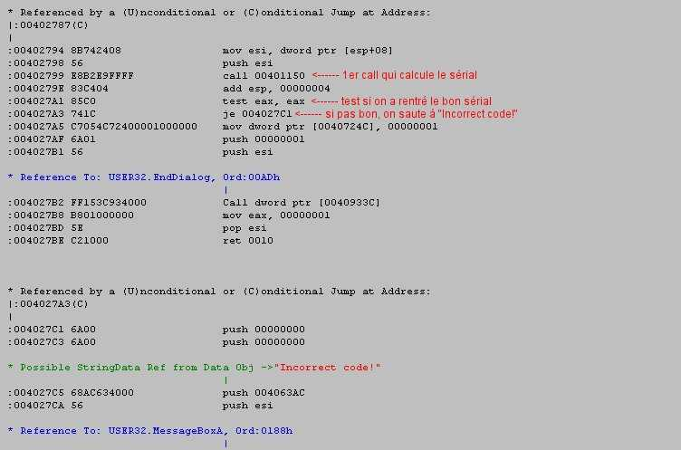
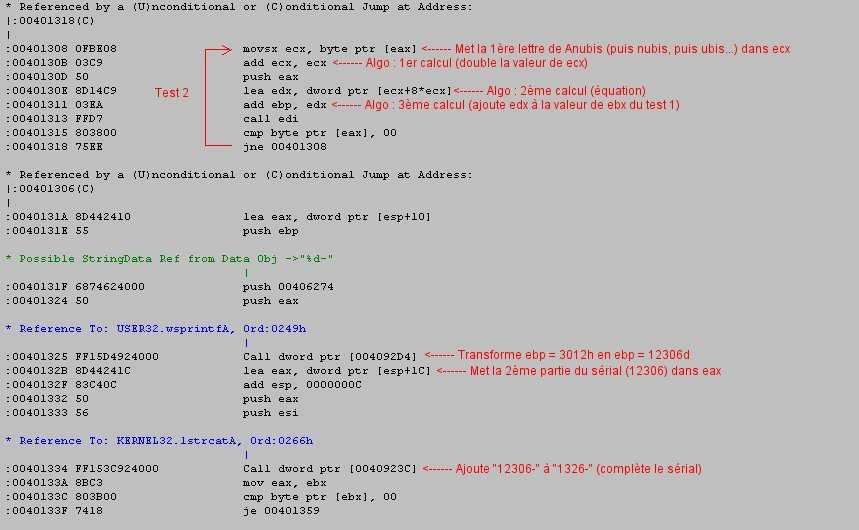
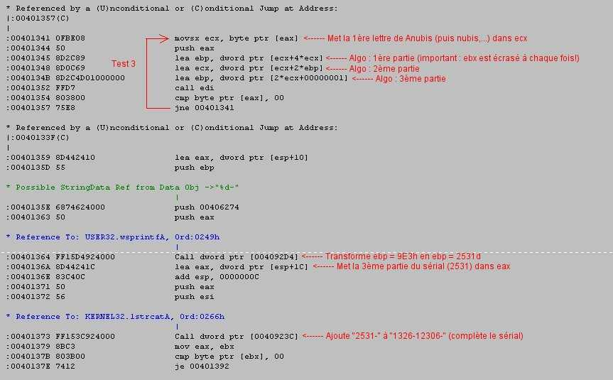
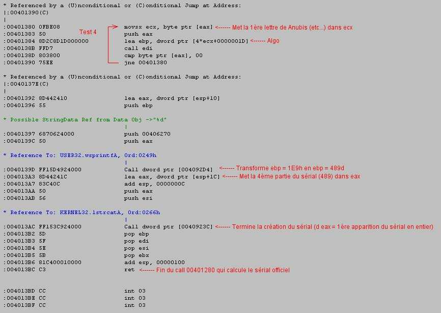

Important : je vous conseille
fortement d'imprimer cette 2ème partie avant de vous lancer dedans,
car une fois Softice lancé,
vous ne pourrez plus lire les explications en même temps!
Outils nécessaires : Softice, Wdasm, Windows Turbo Pascal (ou équivalent).
Bien! Maintenant que l'on a notre Startclean en keygenerator, on va voir la première des deux méthodes exposées ici.
Si je rentre à chaque fois 'Anubis' (et un sérial bidon, encore que c'est même pas la peine!) dans Startclean pour m'enregistrer, mais que je fais varier la dernière lettre par exemple, j'obtiens les différents codes ci-dessous :
Anubis
: 1326 - 12306
- 2531 - 489
Anubit
: 1328 - 12326
- 2553 - 493
Anubiu
: 1330 - 12346
- 2575 - 497
Anubiv
: 1332 - 12366
- 2597 - 501
-----------------------------------------
Anubiss
: 1556 - 14606
- 2531 - 489
Anubist :
1558 - 14626
- 2553 - 493
Anubisu
: 1560 - 14646
- 2575 - 497
Anubisv
: 1562 - 14666
- 2597 - 501
(J'ai mis des couleurs pour que vous visualisiez mieux la différence)
A priori, même en continuant la liste, ou en changeant d'autres lettres, on n'en déduit pas grand chose. Il y a bien quelques points communs (les deux dernières colonnes ne dépendent que de la dernière lettre du nom,...), mais si parfois on peut en déduire la routine de calcul par analyse des sérials, dans ce cas présent ce n'est pas possible, ou du moins long et hasardeux. Si ca l'était, cela voudrait dire que le programmeur ne se serait vraiment pas foulé!!
Comme ce n'est donc pas le cas, on va suivre la routine du programme qui calcule le sérial en fonction de notre nom. Tout d'abord, sous Wdasm, allez dans la zone "Incorrect code!". On a :

Visualisez bien l'endroit et refermez Wdasm. Maintenant on passe sous Softice avec notre bpx hmemcpy (cf. 1ère partie) pour arriver directement dans ce 1er call en 00401150. Continuez à descendre avec F10 jusqu'à voir un call 00401280, mais ne le dépassez pas. Quand j'ai fait la recherche la 1ère fois, j'ai dépassé chaque instruction en scrutant les registres, et c'est sur ce 2ème call (le 1er étant le call 00401150) que tous les registres se sont allumés avec le sérial recherché. Donc pareil, on rentre dans ce call avec F8. Et c'est là que ca devient intéressant (attachez vos ceintures, ce n'est que le début) :
Vous voyez sur l'image quelques commentaires.
En 4012A2, cette petite ligne innocente initialise ebx (qui va nous servir tout au long de notre calcul du sérial) à 6Ah. Tous les calculs qui sont fait maintenant sont en hexadécimal. Il va falloir vous y faire, et vous armer d'une caltos en mode hexa. Vous reconnaitrez les nombres en hexa par le petit "h" à la fin. Si je suis amené à parler de nombre décimaux (notre système normal de comptage), je mettrai un petit "d" à la fin (ex : 19d).
Vous avez également vu que le sérial de Startclean est composé de 4 nombres. Par conséquant, nous allons rencontrer 4 parties dans ce call, en plus de l'intro ci-dessus. Chaque partie calculant un des nombres du sérial.
En 4012AD, vous rencontrez pour la première fois ce fameux 00406030 (cf. 1ère partie) qui est alloué dans esi pour la création du sérial. Le 00406030 apparait quand vous regardez la valeur du registre esi, on a "esi = 00406030".
En 4012BB, on a notre nom qui apparait, et qui est stocké dans ebx, puis dans eax (en 4012C5).
En conclusion de cette intro, le programme est en train d'initialiser ses variables pour la création du sérial. Nous allons voir maintenant les 4 parties du calcul du sérial, mais avant, vous aurez besoin de cette table Ascii pour les codes hexadécimaux et décimaux des caractères de votre nom :
Dec Hx Oct Char Dec Hx Oct Char Dec Hx Oct Char Dec Hx Oct Char
--------------- --------------- --------------- ---------------
0 0 000 NUL (null) 32 20 040 SPACE 64 40 100 @ 96 60 140 `
1 1 001 SOH (start of heading) 33 21 041 ! 65 41 101 A 97 61 141 a
2 2 002 STX (start of text) 34 22 042 " 66 42 102 B 98 62 142 b
3 3 003 ETX (end of text) 35 23 043 # 67 43 103 C 99 63 143 c
4 4 004 EOT (end of transmission) 36 24 044 $ 68 44 104 D 100 64 144 d
5 5 005 ENQ (enquiry) 37 25 045 % 69 45 105 E 101 65 145 e
6 6 006 ACK (acknowledge) 38 26 046 & 70 46 106 F 102 66 146 f
7 7 007 BEL (bell) 39 27 047 ' 71 47 107 G 103 67 147 g
8 8 010 BS (backspace) 40 28 050 ( 72 48 110 H 104 68 150 h
9 9 011 TAB (horizontal tab) 41 29 051 ) 73 49 111 I 105 69 151 i
10 A 012 LF (NL line feed, new line) 42 2A 052 * 74 4A 112 J 106 6A 152 j
11 B 013 VT (vertical tab) 43 2B 053 + 75 4B 113 K 107 6B 153 k
12 C 014 FF (NP form feed, new page) 44 2C 054 , 76 4C 114 L 108 6C 154 l
13 D 015 CR (carriage return) 45 2D 055 - 77 4D 115 M 109 6D 155 m
14 E 016 SO (shift out) 46 2E 056 . 78 4E 116 N 110 6E 156 n
15 F 017 SI (shift in) 47 2F 057 / 79 4F 117 O 111 6F 157 o
16 10 020 DLE (data link escape) 48 30 060 0 80 50 120 P 112 70 160 p
17 11 021 DC1 (device control 1) 49 31 061 1 81 51 121 Q 113 71 161 q
18 12 022 DC2 (device control 2) 50 32 062 2 82 52 122 R 114 72 162 r
19 13 023 DC3 (device control 3) 51 33 063 3 83 53 123 S 115 73 163 s
20 14 024 DC4 (device control 4) 52 34 064 4 84 54 124 T 116 74 164 t
21 15 025 NAK (negative acknowledge) 53 35 065 5 85 55 125 U 117 75 165 u
22 16 026 SYN (synchronous idle) 54 36 066 6 86 56 126 V 118 76 166 v
23 17 027 ETB (end of trans. block) 55 37 067 7 87 57 127 W 119 77 167 w
24 18 030 CAN (cancel) 56 38 070 8 88 58 130 X 120 78 170 x
25 19 031 EM (end of medium) 57 39 071 9 89 59 131 Y 121 79 171 y
26 1A 032 SUB (substitute) 58 3A 072 : 90 5A 132 Z 122 7A 172 z
27 1B 033 ESC (escape) 59 3B 073 ; 91 5B 133 [ 123 7B 173 {
28 1C 034 FS (file separator) 60 3C 074 < 92 5C 134 \ 124 7C 174 |
29 1D 035 GS (group separator) 61 3D 075 = 93 5D 135 ] 125 7D 175 }
30 1E 036 RS (record separator) 62 3E 076 > 94 5E 136 ^ 126 7E 176 ~
31 1F 037 US (unit separator) 63 3F 077 ? 95 5F 137 _ 127 7F 177 DEL
Et maintenant on passe au calcul de la 1ère partie du sérial!
On entre dans la boucle "Test 1".
1ère boucle : Lettre A
En 4012D2, la 1ère lettre de Anubis (soit "A") est mise dans
ecx. Si vous regardez la valeur du registre ecx, vous avez ecx = 41h. Cette
valeur est la valeur hexadécimale de la lettre "A" (cf. table Ascii
plus haut). Vous voyez également ebp = 6Ah qui a été
initialisé en intro.
En 4012D6, on a l'algorythme qui calcule la 1ère partie du sérial (attention, les calculs sont en hexadécimal!):
En 4012DA, le résultat ECh est stocké en mémoire.
En 4012DC, la routine regarde s'il y a encore des lettres dans eax. Un d eax nous montre "nubis", donc à la ligne suivante on va sauter et revenir au début du test 1 en 4012D2.
2ème boucle : Lettre n
On revient donc en 4012D2, on met la 1ère lettre de "nubis"
(soit "n") dans ecx. Un rapide coup d'oeil dans la table Ascii nous confirme
la valeur 6Eh pour "n".
En 4012D6, l'algorythme donne :
En 4012DA, le résultat ebp est stocké en mémoire.
En 4012DC, la routine regarde s'il y a encore des lettres dans eax. Un d eax nous montre "ubis", donc à la ligne suivante on va sauter et revenir au début du test 1 en 4012D2.
Autres boucles :
On fait ensuite la même chose pour toutes les lettres de "Anubis"
et dans la dernière boucle, quand eax est vide, on sort du Test
1 pour aller en 4012E1. A ce moment-là, on a ebp = 52Eh qui est
la valeur finale du traitement de "Anubis" par la routine Test 1.
En 4012EC, un call transforme 52Eh en son équivalent décimal. Si vous regardez la valeur de ebp avant ce call, vous avez "ebp = 52E", faites F10 pour passer ce call, et vous obtenez "ebp = 1326"(vous pouvez le faire aussi avec une calculatrice). Et ce 1326 n'est rien d'autre que la 1ère partie du sérial dans 1326-12306-2531-489 pour Anubis.
En 4012F2, 1326 est mis dans eax. Et en 4012FB, le call alloue 1326 à notre fameux 406030 de la 1ère partie de ce tutorial. Si vous faites d esi avant ce call, vous avez "(rien)"; faites F10 et après le call, un d esi donne "1326-".
Conclusion:
Pour résumer l'algorythme de cette 1ère partie, on a
une constante de départ (ebx = 6Ah), puis le soft prend la valeur
hexa des lettres qui composent notre nom, multiplie cette valeur hexa par
2 et ajoute toutes ces valeurs + la constante (en
abbrégé : cte) de départ dans un
ebp final (52Eh).
On peut donc résumer ce calcul par :
Gardez bien cette expression sous le coude, elle nous servira à générer la 1ère partie du sérial dans notre prog en pascal!
A partir de là, nous avons fait le plus gros du travail. Les trois autres parties qui suivent ont exactement la même logique, seul l'algorythme change.

Cette fois-ci, je vais moins détailler , car c'est exactement la même chose que la partie 1.
On entre donc en 401308 avec le "A" de Anubis que l'on met dans ecx (ecx = 41h).
En 40130B, la valeur de ecx est doublée (ecx = 82h), il s'agit
de la partie 1/3 de l'algo.
En 40130E, on a (partie 2/3 de l'algo):
Ici, je dois faire quelques commentaires. Je ne sais pas si le programmeur du soft à voulu nous brouiller les pistes ou quoi, mais c'est absolument débile d'écrire des trucs comme "ecx + 8*ecx=ecx". Cela fait tout simplement "9*ecx = ecx". De même, l'algo 1/3 et l'algo 2/3 peuvent être facilement simplifié en une seule partie algo "18*ecx = ecx".
Vous faites ensuite pareil avec les autres lettres de "nubis", et au final on obtient ebp = 3012h. Ensuite en 401325, cette valeur est transformé en décimal, ce qui donne un beau 12306d qui n'est rien d'autre que la 2ème partie du sérial! ;). Et en 401334, cette 2ème partie est ajoutée à la 1ère partie dans la mémoire esi en 00406030. Un d esi vous donnera "1326-12306-".
Conclusion:
Pour résumer l'algorythme de cette 2ème partie, on prend
la valeur hexa des lettres qui composent notre nom, on multiplie cette
valeur hexa par 18 et on ajoute toutes ces valeurs + le résultat
du Test 1 dans un ebp final (3012h).
On peut donc résumer ce calcul par :
Gardez bien cette expression sous le coude également, elle nous servira à générer la 2ème partie du sérial dans notre prog en pascal!
Ca va?!?! vous ne fumez pas trop? ;) On n'a pas encore fini, mais on y arrive tranquillement à la fin, donc on continue! :p

Ce Test 3 est composé d'un algo en trois parties que j'ai mis sur l'image. Ici, il y a un détail très important que j'ai mis : en 401345, on ne tient pas compte de la valeur de ebp déjà existante quand on colle le résultat de "ecx + 4*ecx" dans ebp. On écrase donc ebp à chaque fois, y compris pour toutes les lettres de "Anubis", SAUF pour la dernière lettre (le "s" qui vaut 73h, cf. table Ascii) quand on sort du Test 3 puisque eax est vide.
Donc, le résultat du Test 3 est basé UNIQUEMENT sur le traitement de la dernière lettre du nom. On retrouve la constatation que j'avais faite au départ quand on analyse les différents sérials des variantes faites sur Anubis. Et bien sûr, on verra que c'est la même chose pour le Test 4.
Conclusion:
Au final de ce Test 3, on se retrouve avec un ebp = 9E3h qui comme
vous vous en doutez correspond à 2531d (3ème partie du sérial)
avec la conversion du call en 401364.
On résumera l'algorythme par (je n'ai pas détaillé les calculs, mais vous les voyez à l'image ci-dessus):
Gardez toujours cette expression sous le coude également, elle nous servira à générer la 3ème partie du sérial dans notre prog en pascal!
Je fini de vous achever avec la partie 4. ;p

Comme je l'ai dit dans la partie 3, ici on ne prend que la dernière lettre en compte également. Cela vient de l'algo en 401384 qui ne tient pas compte de la valeur de ebp quand il lui colle une nouvelle valeur. On ne traite donc que le "s" de Anubis et on obtient un ebp = 1E9h qui correspond évidement à 489d en décimal (dernière partie du sérail).
En 4013AC, cette 4ème partie est ajouté à "1326-12306-2531-" qui figurait déjà dans esi. Et aprés avoir passé cette ligne avec F10 on obtient par un d esi la première apparition de notre sérial en entier!
Puis en 4013BC, on termine ce magnifique call dont nous venons de faire l'étude ;), et on retourne dans le 1er call (cf. 1ère partie) qui se terminera lui aussi pour revenir peut avant le saut fatal sur "Incorrect code!" (ouhla, je suis terrifié...).
Conclusion:
Au final de ce Test 4, on se retrouve avec un ebp = 1E9h ou ebp = 489d.
On résumera l'algorythme par (je n'ai pas détaillé les calculs, mais vous les voyez à l'image ci-dessus):
Gardez encore cette expression sous le coude, elle nous servira à générer la 4ème partie du sérial dans notre prog en pascal!
Voilà! pour ceux qui sont encore en vie aprés tout cela, ben on va passer à la reprogrammation en pascal pour faire notre propre keygen :)
D'abord le source, puis les détails juste après.
{*************** DEBUT DU SOURCE ***************}
{program keygen;} {ajoutez
cette ligne si vous ne compilez pas avec WTP}
uses wincrt;
var nom : string[255];
long_nom : integer;
t1,t2,t3,t4 : integer;
i
: integer;
BEGIN
writeln('************************************');
writeln('* Anubis''s Startclean Keygenerator *');
writeln('************************************');
writeln;
writeln('Greetz to all Shmeitcorp Memberz ;)');
writeln;
writeln('Sorry pour la version simple de ce keygenerator,');
writeln('mais au moins vous pouvez en etudier le source!');
nom:='';
writeln;
writeln('Tapez ''fin'' pour sortir.');
while nom<>'fin' do
begin
writeln;
writeln('Entrez votre nom : ');
readln(nom);
long_nom:=length(nom);
t1:=0;
t2:=0;
t3:=0;
t4:=0;
if (nom<>'fin') and (long_nom<>0) then
begin
{Creation de la 1ere partie du code}
for i:=1 to long_nom do t1:=2*ord(nom[i])
+ t1;
t1:=t1+106;
{Creation de la 2eme partie du code}
for i:=1 to long_nom do t2:=18*ord(nom[i])
+ t2;
t2:=t2+t1;
{Creation de la 3eme partie du code}
t3:=22*ord(nom[long_nom])+1;
{Creation de la 4eme partie du code}
t4:=4*ord(nom[long_nom])+29;
end;
if (long_nom=0) then
begin
t1:=106;
t2:=t1;
t3:=t2;
t4:=t3;
end;
if (nom<>'fin') then
begin
writeln;
writeln('Votre serial est :');
writeln(t1:0,'-',t2:0,'-',t3:0,'-',t4:0);
end;
end;
end.
{*************** FIN DU SOURCE ***************}
1ère nouveauté : instruction while...do
Ben, c'est la même structure que if...then, et ca signifie "tant
que....faire". Voila!
Dans mon while, j'utilise "<>", c'est comme ca qu'on écrit
"différent de".
2ème nouveauté : instruction lenght()
Si votre nom fait 6 lettres (ex : Anubis), length('Anubis') renvoie
6. Il calcule la longueur d'une chaine et on obtient une variable (que
j'appelle long_nom pour longueur du nom) de type integer.
3ème nouveauté : travaille sur les chaines
nom[i] (avec i de type integer)
Ici, dans la variable nom qui est une chaine de caractères
(ex : Anubis), nom[4] me donnera "b". C'est à dire que j'ai la 4ème
lettre de nom.
4ème nouveauté : instruction ord()
Dans mon tut sur le pascal, j'ai développé à la
fin l'exemple de char(). Ici, c'est l'inverse. Si le code ascii en décimal
de A est 65d, un ord('A') me donne 65.
Vous voyez tout de suite l'intérêt par rapport à
notre tut!
Et maintenant, l'explication du source en pascal :
- Quand on compile sous WTP, on ne met exceptionnellement pas de "program
keygen;"
- On saisit d'abord le nom dont on veut calcluer le sérial.
Ce nom est mis dans la variable nom.
- La boucle while nous
permet de calculer tous les sérials que l'on veut tant que le nom
que l'on entre n'est pas "fin".
- On calcule ensuite le nombre de lettres de
nom
que l'on met dans long_nom
- Ensuite, si on ne désire pas sortir
du programme (nom<>'fin') ou que la longueur du nom rentré
n'est pas égale à zéro (long_nom<>0), on calcul
le sérial suivant les 4 parties que l'on a étudié
plus haut et qui sont en violet.
A noter que Startclean calcul tout en hexadécimal puis fait la conversion en décimal à la fin de chaque partie. Lui c'est un programme dans un ordinateur, c'est pour cela qu'il se tape le boulot en hexa. Nous, on fait directement le travail en décimal sans faire la double conversion en hexa puis en décimal (ce qui n'apporte rien du tout). C'est pour ca que vous avez du "29" dans le 4ème calcul. Ce "29" correspond au 1Dh dans l'algo de la 4ème partie.
Autre petite chose, le cas où on rentre une chaine vide (on appuye sur "Entrée" sans rentrer de nom). Startclean dans ce cas là ne calcule même pas les algorythmes, il initialise ebp = 106d (soit 6Ah) et cette valeur n'est pas modifié jusqu'à la fin du calcul du sérial. Dans ce cas, Startclean nous offre un beau 106-106-106-106 comme sérial, alors que mon source donne 106-106-1-29. Donc il a fallu traiter ce cas qui est normal dans le fond.
Puis au final dans mon keygen, on affiche le sérial calculé
et si nom n'est pas égal à 'fin', on revient au début
de la boucle while.
Compilez ce programme que vous aurez copié dans le notepad et
appelé par exemple keygen.pas
Nous achevons ici cette étude des keygens. (Ouf!!) ;)
Conclusion
Voilà, c'était assez long mais très instructif. Je pense qu'avec ca, on a une bonne vision de la manière dont sont fabriqués les keygens en général. N'hésitez pas à reprendre ce tut plusieurs fois et à vous faire la main avec Softice en refaisant les calculs par vous même, c'est ce qu'il y a de plus formateur. Et ne vous découragez pas, personellement c'est ma première experience dans un keygen et j'ai fait ca sur une après-midi (avec la 1ère partie de ce même tut) - ne sachant que faire pour m'occuper -. Bon j'étais plus très frais à la fin, mais aprés coup ca n'est pas trop méchant à faire :))
Sinon, pour ce qui est de Stratclean, je pense que l'on à vraiment fait le tour au niveau Cracking (à moins que quelqu'un nous en ponde une version VB :) ). Si quelqu'un trouve une autre manière pour le cracker, je lui offre une bière! ;) . Par contre, je pense que dans les Mementos à venir il serait intéressant d'inclure à Startclean une protection Softice par Reverse pour ensuite montrer comment la contourner! Ca ferait 2 tutz cool en plus sur ce petit soft...
Une dernière chose : avec tous les services pédagogiques que Startclean nous a rendu, on va p'tet demander une licence pour s'enregister, non!??! hehehe......
Cordialement,
Votre serviteur,